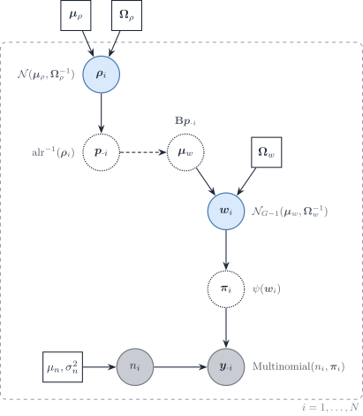

%%{init: {"theme": "sandstone"}}%%
flowchart TD
A["Lineage-aware bulk mRNA deconvolution"] --> B{"Parent–child linkage"}
B -->|"Hard equality (Eq. parent–child)"| C["MuSiC, SCDC, HIDE, Rectangle"]
B -->|"Soft / uncoupled levels"| D["HiDecon, Kassandra"]
C --> E{"Genes at each node"}
D --> F{"Genes at each node"}
E -->|"Fixed reference matrix"| G["SCDC ensemble"]
E -->|"Node-local reweighting"| H["MuSiC, HIDE, Rectangle"]
F -->|"Shared matrix + penalty"| I["HiDecon"]
F -->|"Level-specific signatures"| J["Kassandra"]
DeCovarT extensions roadmap: lineages, covariates, modalities and beyond
2026-10-15
Source:vignettes/theory-decovart-extensions-roadmap.qmd
Scope
Extensions that are not implemented but fit the DeCovarT likelihood without changing its core: the convolution \boldsymbol{y}_{\cdot i}\mid\boldsymbol{p}_{\cdot i}\sim \mathcal{N}_G(\boldsymbol{\mu}\boldsymbol{p}_{\cdot i}, \boldsymbol{\Sigma}(\boldsymbol{p}_{\cdot i})) with \boldsymbol{\Sigma}(\boldsymbol{p})=\sum_jp_j^{2}\boldsymbol{\Sigma}_j (derivatives vignette). The same catalogue is tracked in GitHub issue 5. The single-cell-specific model (scales, within- and between-replicate covariance) is in the tailored vignette; the Bayesian purification of sample-level profiles is in the Bayesian Wiener-filter vignette; inference is in the MLE and inference vignette.
| Extension | What changes in DeCovarT | Section |
|---|---|---|
| Lineage hierarchy | parent–child equality or penalty on \boldsymbol{p} | Sec. 1 |
| Sample covariates | \boldsymbol{p}_{\cdot i} or \boldsymbol{\mu} depend on covariates | Sec. 2 |
| Incomplete reference | one unknown component | Sec. 3 |
| Isoforms, proteins, other modalities | stacked features, block covariance | Sec. 4, Sec. 5 |
| Spatial spots | neighbouring spots share information | Sec. 6 |
| Time-resolved composition | \boldsymbol{p} evolves along time | Sec. 7 |
| Continuous states | archetypes instead of discrete types | Sec. 8 |
| Ensembles | combine several estimators | Sec. 9 |
| Weights and robust losses | GLS, gene weights, robust regression | Sec. 10 |
| Gene compositions | a second simplex for genes | Sec. 11 |
Notation: gene g, cell type j, bulk sample i; \boldsymbol{y}_{\cdot i} the bulk profile; \boldsymbol{p}_{\cdot i} the cell fractions; \boldsymbol{\mu}_{\cdot j} and \boldsymbol{\Sigma}_j the reference moments; \boldsymbol{x}_{\cdot j,i} the purified profile of type j in sample i.
Lineage-aware hierarchical deconvolution
Flat deconvolution treats every cell type as a sibling on one simplex. Hierarchical methods instead estimate proportions at several granularities linked by a cell-type tree: broad compartments first, then closely related subtypes whose mean signatures are collinear at the leaf level.
We reuse the DeCovarT set-up from the article: gene g=1,\ldots,G; cell type or tree node j; sample i=1,\ldots,N (independence across i). Slices follow the usual dot notation (\boldsymbol{\mu}_{\cdot j}, \boldsymbol{y}_{\cdot i}).
- \boldsymbol{y}=(y_{gi})\in\mathbb{R}_{+}^{G\times N}: bulk expression; \boldsymbol{y}_{\cdot i}\in\mathbb{R}_{+}^{G} is sample i.
-
\boldsymbol{\mu}=(\mu_{gj})\in\mathbb{R}^{G\times J}: mean signature; \boldsymbol{\mu}_{\cdot j}\in\mathbb{R}^{G} is the cross-sample mean profile of type j (as in
MuSiC(Wang et al. 2019)). - \boldsymbol{p}=(p_{ji})\in\,]0,1[^{J\times N}: unknown relative proportions; \boldsymbol{p}_{\cdot i}\in\,]0,1[^{J} is the composition of sample i.
\boldsymbol{y}_{\cdot i}=\boldsymbol{\mu}\,\boldsymbol{p}_{\cdot i}, \tag{1}
\sum_{j=1}^{J} p_{ji}=1, \qquad p_{ji}\ge 0 \qquad (i=1,\ldots,N). \tag{2}
p_{j,i}=\sum_{c\in\mathcal{C}(j)} p_{c,i} \qquad (i=1,\ldots,N). \tag{3}
At each tree level the bulk mixture satisfies Eq. 1 with each composition on the unit simplex (Eq. 2). For a parent node j with child set \mathcal{C}(j), coherent hierarchical estimates require Eq. 3.
Hard versus soft lineage constraints
Despite diverse implementations, hierarchical bulk mRNA deconvolution methods fall into two constraint regimes:
-
Hard constraints — child lineage ratios are forced to sum exactly to the parent estimate (Eq. 3).
MuSiCandSCDC(tree-guided mode) first fix a parent total \hat{p}_{j,i}, then fit children q_{c,i} on the within-parent simplex so that \hat{p}_{c,i}=q_{c,i}\,\hat{p}_{j,i} (Wang et al. 2019; Dong et al. 2021).HIDEapplies the same equality by renormalising child estimates after each top-down split (Völkl et al. 2025);Rectanglepropagates coarse cluster fractions as hard bounds on fine-grained estimates (Eder et al. 2026). -
Soft constraints — parent–child coherence is encouraged but not enforced exactly.
HiDeconadds a squared mismatch penalty to the deconvolution loss (Huang, Cai, Lu, et al. 2024);Kassandratrains separate predictors at predefined hierarchy levels without an explicit parent–child equality (Zaitsev et al. 2022).
Hard splitting after fixing the parent (Eq. 4):
\hat{p}_{c,i}=q_{c,i}\,\hat{p}_{j,i}, \quad q_{c,i}\ge 0,\; \sum_{c\in\mathcal{C}(j)} q_{c,i}=1. \tag{4}
HIDE renormalisation (Eq. 5):
\hat{p}_{c,i}\leftarrow \hat{p}_{c,i}\, \frac{\hat{p}_{j,i}}{\sum_{c'\in\mathcal{C}(j)}\hat{p}_{c',i}}. \tag{5}
HiDecon soft penalty (Eq. 6):
\mathcal{L}_{\mathrm{tot}} = \mathcal{L}_{\mathrm{deconv}} + \lambda\sum_{j}\sum_{i=1}^{N} \Bigl( p_{j,i}-\sum_{c\in\mathcal{C}(j)} p_{c,i} \Bigr)^{2}. \tag{6}
Within each regime, methods further differ by whether they reuse a single reference signature at every granularity or reselect / reweight genes locally at each internal node (Figure 1).
xCell 2.0 (Angel et al. 2025) uses Cell Ontology ancestry to build signatures and control spillover between related labels, but its outputs are enrichment scores rather than a compositional tree; it sits outside the hard/soft fraction taxonomy above.
| method | constraint | lineage constraint | gene strategy |
|---|---|---|---|
| MuSiC | Hard | Fix \(\hat{p}_{j,i}\); \(\hat{p}_{c,i}=q_{c,i}\hat{p}_{j,i}\), \(\sum_c q_{c,i}=1\) | Node-local consistent genes |
| SCDC | Hard (tree-guided) | MuSiC step; \(\hat{p}_{c,i}=q_{c,i}\hat{p}_{j,i}\) | Full reference; optional node split |
| HIDE | Hard | Fit then renormalise: \(\hat{p}_{c,i}\leftarrow\hat{p}_{c,i}\hat{p}_{j,i}/\sum_{c'}\hat{p}_{c',i}\) | Parent-specific learned weights |
| Rectangle | Hard (multiscale) | Coarse \(\boldsymbol{p}^{(\mathrm{coarse})}\) bounds fine estimates | Clustered + direct signatures |
| HiDecon | Soft | \(\mathcal{L}_{\mathrm{tot}}=\mathcal{L}_{\mathrm{deconv}}+\lambda\sum_{j,i}(p_{j,i}-\sum_c p_{c,i})^2\) | Shared $\boldsymbol{\mu}$; joint penalised fit |
| Kassandra | Soft / uncoupled | Separate models; no parent–child equality | Level-specific trained signatures |
| xCell 2.0 | None (scores) | Ontology spillover control only | Ontology-aware signature generation |
Table 2 and Figure 1 summarise the landscape aligned with Eq. 1–Eq. 3. Hard methods (MuSiC, HIDE, Rectangle) are easier to audit node by node but inherit upstream bias; soft coupling (HiDecon) can stabilise rare subtypes when the tree is credible. Node-local gene reweighting (MuSiC, HIDE, Rectangle) targets collinear siblings; fixed or level-specific signatures (SCDC, Kassandra) trade flexibility for simpler reference construction.
A natural DeCovarT extension would combine the Gaussian convolution with either Eq. 4 or Eq. 6, node-local marker panels, and ALR optimisation when a curated lineage tree is supplied—benchmarked at broad, intermediate, and terminal resolutions against HiDecon, HIDE, tree-guided MuSiC, and Rectangle. Spatial HIDF applies the same tree idea to spots with an RCTD back-end (Zou et al. 2026); scDETECT uses a lineage prior for differential expression rather than for \boldsymbol{p} (Xu et al. 2025). Archetypes and cell states (type versus shared gene-expression programmes) are taken up in Sec. 8.
Sample-level covariates
A condition, tissue, batch, sex or age vector \boldsymbol{z}_{i} is indexed by sample i, whereas \boldsymbol{\mu} has genes in rows and cell types in columns. Covariates therefore cannot be appended as extra columns of the signature. Two generative extensions are distinct (Fan et al. 2022).
State model. Condition alters the reference distribution,
\boldsymbol{x}_{\cdot j,i}\mid\boldsymbol{z}_{i} \sim\mathcal{N}_G \bigl(\boldsymbol{\mu}_{j}(\boldsymbol{z}_{i}),\boldsymbol{\Sigma}_{j}(\boldsymbol{z}_{i})\bigr), \tag{7}
for example \boldsymbol{\mu}_{j}(\boldsymbol{z}_{i})=\boldsymbol{\mu}_{j}+B_{j}\boldsymbol{z}_{i}. The bulk law is then the Gaussian convolution with those condition-dependent moments. MuSiC2 addresses the same mismatch by iteratively dropping cell-type-specific DE genes between the bulk condition and the scRNA-seq reference; it remains closed-reference and cannot invent novel types (Fan et al. 2022).
Composition model. Condition alters \boldsymbol{p}_{\cdot i} through the existing ALR coordinates \boldsymbol{\rho}_{i},
\boldsymbol{\rho}_{i}=B\boldsymbol{z}_{i}+\boldsymbol{u}_{i}, \qquad \boldsymbol{p}_{\cdot i}=\psi(\boldsymbol{\rho}_{i}), \tag{8}
with \psi the additive logistic map. This is the setting in which a future predict() method on new \boldsymbol{z} would be meaningful.
A known sequencing exposure s_{i} is a multiplicative scale, \boldsymbol{y}_{\cdot i}\sim\mathcal{N}_G(s_{i}\boldsymbol{\mu}\boldsymbol{p}_{\cdot i},s_{i}^{2}\Sigma(\boldsymbol{p}_{\cdot i})), not an additive lm offset. Cell-type transcriptome size r_{j} is a different parameter (RNA versus cell fractions). A gene-wise affine standardisation applied identically to \boldsymbol{y}, \boldsymbol{\mu} and every \boldsymbol{\Sigma}_{j} leaves \hat{\boldsymbol{p}} unchanged in exact arithmetic; column-wise scale() on \boldsymbol{\mu} does not.
Incomplete references
Closed-reference DeCovarT assumes every abundant type appears as a column of \boldsymbol{\mu}. An unrepresented population contributes a structured gene vector \boldsymbol{u}_{i}, not a scalar intercept:
\boldsymbol{y}_{\cdot i} =\boldsymbol{\mu}\,\boldsymbol{p}_{\cdot i}^{\mathrm{known}} +p_{u,i}\boldsymbol{u}_{i}+\boldsymbol{\varepsilon}_{i}, \qquad \sum_{j}p_{ji}+p_{u,i}=1. \tag{9}
DICEPro shows that supervised engines remain stable while most types are present and then collapse as \boldsymbol{\mu} becomes incomplete, especially when the missing type is abundant; it wraps existing methods by adjusting reference signatures (Ba et al. 2026). BayICE is a univariate-Gaussian Bayesian semi-reference model that estimates known types and one unknown type, with spike-and-slab selection of genes and columns of \boldsymbol{\mu} (Tai et al. 2021). Montierth et al. convolve negative binomials for known components plus an unknown tumour component, assuming proportions shift means but not dispersions (Montierth et al. 2025). CDState reconstructs malignant states rather than a single tumour column (Kraft et al. 2026). EPIC already includes an uncharacterised compartment in its signature (Racle et al. 2017). Semi-CAM uses partial marker information (Dong et al. 2020); BLEND automates reference-panel selection (Huang, Cai, McKennan, et al. 2024).
Isoform-level observations
Gene-level \boldsymbol{y}\in\mathbb{R}_{+}^{G} discards differential isoform usage. Expanding the observation to transcripts t=1,\ldots,T (short-read quantification or long-read) yields a taller signature \boldsymbol{\mu}^{\mathrm{iso}}\in\mathbb{R}^{T\times J}. IsoDeconvMM estimates \boldsymbol{p} from isoform-level expression, even from a single gene, by exploiting differential isoform usage rather than gene-level DE; full-length long-read or spatial RNA-seq are the natural sources of cell-type- and isoform-specific references when droplet scRNA-seq misses isoforms (Heiling et al. 2023).
Multi-modal and multi-omics
Bulk deconvolution is one arm of a multi-scale tumour-immune map that also includes scRNA-seq and spatial assays (Sun et al. 2026). DECODE trains a shared deconvolution architecture across omics (Zhao et al. 2026). Yao et al. reconstruct cell-type-specific regulatory processes from paired ATAC-seq and bulk RNA-seq, benchmarking against CIBERSORTx (Yao et al. 2026). Proteomics-constrained deconvolution uses protein abundance as a regulariser on transcriptomic \boldsymbol{p} / CTS (Işık et al. 2026). Unico already treats expression and DNA methylation under one tensor model (Chen et al. 2025). The HADACA3 community benchmark stresses the limits of naive multimodal concatenation (Barbot and Richard 2026).
Spatial transcriptomics
Each spot (or pixel) s is a local mixture \boldsymbol{y}(s) with its own \boldsymbol{p}(s)\in\Delta^{J-1}. The Gaussian convolution still applies per location; space enters as dependence among neighbouring \boldsymbol{p}(s). RCTD does not use that dependence: each pixel is an independent count mixture (the RCTD Poisson–log-normal law), so the statistical comparison belongs in the RCTD comparison (Cable et al. 2022). Sequencing-based surveys classify probabilistic assumptions and provide practical benchmarks (Saqib and Kim 2025; Gaspard-Boulinc et al. 2025; Li et al. 2023). Imaging-based reconstruction goes the other way: HistoMap generates single-cell-like profiles from bulk with a variational autoencoder and maps them onto histological coordinates with an H-ViT (He et al. 2026); HEDeST pairs H&E with spot-level \hat{\boldsymbol{p}}(s) (Gortana et al. 2026). SpaDecoder aligns slices, infers neighbourhoods, and uses 3-D Gaussian kernels, with an explicit simplex constraint and a penalty on the number of types per spot (Lobo et al. 2026). Under cell-type mismatch, missing types are mostly absorbed by the most similar column of \boldsymbol{\mu} (Mahamune et al. 2025) — the spatial counterpart of Sec. 3.
Time-resolved composition
When J>G the linear map is under-determined. Elastic-net methods such as DCQ (glmnet) select the support of cell types that change between biological states, rather than recovering a full simplex snapshot (Altboum et al. 2014; Friedman et al. 2026). Static benchmarks that score these methods as poor deconvolution miss that target (Jin and Liu 2021). DCQ tracked 213 immune subtypes across ten influenza time points and reported changes in about 70 types; ImmQuant packages a similar pipeline (Frishberg et al. 2016).
A DeCovarT trajectory would put a temporal prior on ALR coordinates, e.g. \boldsymbol{\rho}_{i}(t)=\boldsymbol{\rho}_{i}(t-1)+\boldsymbol{\eta}_{t}, as in ChronoStrain’s Bayesian strain trajectories (Kim et al. 2025). scTREND supplies an annotation-free single-cell hazard clock for organoid / gastruloid time courses (Yuki et al. 2026). SpaDecoder adds space–time kernels on spots (Lobo et al. 2026).
Archetypes, states, and potency
A finite J-column signature is a piecewise approximation of within-type continua. Archetypal analysis places cells on a simplicial polytope whose vertices are extreme programmes, avoiding NMF/ICA rotational ambiguity (Hart et al. 2015; Crowley et al. 2026). ACTION separates transcriptional identity (cell type) from activity states (shared gene-expression programmes) and chooses k automatically (Mohammadi et al. 2020); scAAnet extends that construction with a VAE and a zero-inflated negative-binomial reconstruction (Wang and Zhao 2022). tissueResolver builds a virtual tissue without predefined labels, aiming at fine states within types (Simeth et al. 2024). Potency and differentiation scores, as in hypothalamic–pituitary organoids, replace discrete labels by a continuous axis (Asano et al. 2024). Macrophage M1/M2 polarisation is the standard biological example of a microenvironment-dependent continuum rather than two extra columns of \boldsymbol{\mu}.
Ensembles
Two operations are easily confused. Several references, one algorithm: MuSiC weights subjects and SCDC weights scRNA-seq studies (Wang et al. 2019; Dong et al. 2021). Several algorithms, one consensus \hat{\boldsymbol{p}}: EnsDeconv fuses 11 bulk engines plus variation in references, markers and normalisation by cell-type-specific robust regression, on 4,937 samples with measured fractions (Cai et al. 2022). EnDecon runs 14 spatial (and bulk) methods and forms a weighted-median consensus, down-weighting discordant engines (Tu et al. 2023). The DREAM community assessment found that a mean-rank ensemble beat every individual method (White et al. 2024).
Robust regression, GLS, and gene weights
Let W=\mathrm{diag}(w_{1},\ldots,w_{G}) be gene-specific precision weights (DWLS dampening, voom mean–variance weights, or inverse leverage). Weighted least squares minimises (\boldsymbol{y}_{\cdot i}-\boldsymbol{\mu}\boldsymbol{p}_{\cdot i})^{\top} W(\boldsymbol{y}_{\cdot i}-\boldsymbol{\mu}\boldsymbol{p}_{\cdot i}) (Tsoucas et al. 2019; Law et al. 2014). CIBERSORT’s \nu-SVR replaces squared error by a robust hinge (Newman et al. 2015).
Generalised least squares uses a single residual covariance W that does not depend on \boldsymbol{p}. With \boldsymbol{\Sigma}_j known, the gold-standard competitor is deconvolute_ratios_gls() (MASS::lm.gls, inverse = TRUE): W is a G\times G covariance, typically fixed_gls_covariance() \operatorname{diag}\{\sum_j \bar p_j^2\boldsymbol{\Sigma}_j\} at \bar p_j=1/J (or at a known design p^{\star}). Then
\hat{\boldsymbol{p}}^{\mathrm{GLS}} =(\boldsymbol{\mu}^{\top}W^{-1}\boldsymbol{\mu})^{-1}\boldsymbol{\mu}^{\top}W^{-1}\boldsymbol{y}_{\cdot i}, \tag{10}
after which the simplex is imposed by projection. Do not copy W into every DeCovarT tensor slice: \sum_j p_j^2 W=\|p\|_2^2 W still depends on p. WLS is the diagonal special case. DeCovarT is strictly richer: \Sigma(\boldsymbol{p})=\sum_{j}p_{ji}^{2}\boldsymbol{\Sigma}_{j} depends on the unknown coefficients. nlme::gls() is for estimating a structured \Sigma (AR(1), compound symmetry); it is the wrong tool when W is already known.
A direct extension, following the BayesPrism–DWLS construction (Zhang et al. 2026), is to ingest W into the convolution: transform \boldsymbol{y}^{\star}=W^{1/2}\boldsymbol{y}_{\cdot i}, \boldsymbol{\mu}^{\star}=W^{1/2}\boldsymbol{\mu}, \boldsymbol{\Sigma}_{j}^{\star}=W^{1/2}\boldsymbol{\Sigma}_{j}W^{1/2} and run the existing solver — weighted GLS with cell-type-specific networks retained.
cellGeometry estimates uncertainty from gene-wise heteroscedasticity and the cross-sample variance of each gene, i.e. a global gene/sample covariance rather than \boldsymbol{\Sigma}_{j} (Lau et al. 2026). Unico deconvolves a 2-D bulk matrix into a 3-D sample \times feature \times cell-type tensor and explicitly models cell-type-level covariances, including on methylation (Chen et al. 2025). Interaction monomials p_{j}p_{k} in the mean (the interaction mean) are the Scheffé / general-linear-model route; DecOT instead changes the discrepancy to an optimal-transport loss (Liu et al. 2022).
Two simplices without convolution
McGregor et al. model a count vector of D features as compositional, not as a mixture of cell-type Gaussians (McGregor et al. 2026). In DeCovarT notation the features are the G genes. Sample i has library size n_i and gene composition \boldsymbol{\pi}_i\in\Delta^{G-1}. The observation is multinomial,
\boldsymbol{y}_{\cdot i}\mid n_i,\boldsymbol{\pi}_i \sim\mathrm{Multinomial}(n_i,\boldsymbol{\pi}_i), \qquad n_i\sim\mathrm{LogNormal}(\mu_n,\sigma_n^2), \tag{11}
with n_i\perp\boldsymbol{\pi}_i (read depth is treated as a technical scale). The composition is logit-normal on the ALR chart that uses gene G as the reference,
\boldsymbol{w}_i =\mathrm{alr}(\boldsymbol{\pi}_i) =\log(\pi_{1,i}/\pi_{G,i},\ldots,\pi_{G-1,i}/\pi_{G,i}), \qquad \boldsymbol{w}_i\sim\mathcal{N}_{G-1}(\boldsymbol{\mu}_w,\boldsymbol{\Sigma}_w), \qquad \boldsymbol{\pi}_i=\psi(\boldsymbol{w}_i), \tag{12}
where \psi is the additive logistic map already used for cell-type ratios (additive_logistic()). When G is large relative to the number of bulk samples, McGregor et al. penalise the Gaussian log-likelihood of the \boldsymbol{w}_i with a graphical lasso on the ALR precision \boldsymbol{\Omega}_w=\boldsymbol{\Sigma}_w^{-1} (Friedman et al. 2008), or the same \ell_1 penalty on the CLR precision (\mathbf{G}^{\mathsf{T}}\boldsymbol{\Sigma}_w\mathbf{G})^{-1}. That shrinks spurious gene–gene partial correlations. Their target is proportionality (\phi, \rho, log-ratio variances) on the latent \boldsymbol{\pi}_i, because empirical log-ratios of raw counts are biased by variation in n_i.
This is not DeCovarT’s convolution (the Gaussian convolution). There is no mixing \sum_j p_j\boldsymbol{\mu}_j of purified profiles, and no \boldsymbol{\Sigma}(\boldsymbol{p})=\sum_j p_j^2\boldsymbol{\Sigma}_j. Current DeCovarT treats \boldsymbol{y}_{\cdot i} as an unbounded continuous intensity. Library size is omitted: the counts are not constrained to sum to n_i.
A fully compositional deconvolution would keep two simplices. Cell ratios \boldsymbol{p}_i\in\Delta^{J-1} stay on the existing ALR chart \boldsymbol{\rho}_i=\mathrm{alr}(\boldsymbol{p}_i). Gene composition stays on Eq. 12. The two can be coupled by a regression of the gene-ALR mean on \boldsymbol{p}_i, for example \boldsymbol{\mu}_w(\boldsymbol{p}_i)=\mathbf{B}\boldsymbol{p}_i, still without forming a Gaussian convolution of cell-type covariances. Figure 2 is that joint directed graph, drawn with the symbol key of the other plate diagrams: grey circles observed, blue circles latent, dotted circles deterministic, squares fixed.

Figure 2: Directed graph for a logit-normal multinomial gene composition (McGregor et al.) extended with a second simplex for cell-type ratios. Grey circles are observed, blue circles are latent, dotted circles are deterministic and squares are fixed parameters. The dashed arrow from \boldsymbol{p}_{\cdot i} into \boldsymbol{\mu}_w is the optional deconvolution link; it is not a Gaussian convolution of \boldsymbol{\Sigma}_j.
References
Altboum, Zeev, Yael Steuerman, Eyal David, et al. 2014. ‘Digital Cell Quantification Identifies Global Immune Cell Dynamics During Influenza Infection’. Molecular Systems Biology 10. https://doi.org/10.1002/msb.134947.
Angel, Almog, Loai Naom, Shir Nabet-Levy, and Dvir Aran. 2025. ‘xCell 2.0: Robust Algorithm for Cell Type Proportion Estimation Predicts Response to Immune Checkpoint Blockade’. Genome Biology 26 (1): 335. https://doi.org/10.1186/s13059-025-03784-3.
Asano, Tomoyoshi, Hidetaka Suga, Hirohiko Niioka, et al. 2024. ‘A Deep Learning Approach to Predict Differentiation Outcomes in Hypothalamic-Pituitary Organoids’. Communications Biology 7 (1). https://doi.org/10.1038/s42003-024-07109-1.
Ba, Kalidou, Rodolphe Thiébaut, Xavier Hinaut, and Boris Hejblum. 2026. When Less Is Not More: DICEPro Mitigates the Impact of Incomplete Reference Matrices on Cellular Frequency Deconvolution. bioRxiv. https://doi.org/10.64898/2026.06.17.732876.
Barbot, Hugo, and Magali Richard. 2026. ‘On the Promises and Limits of Multimodal Integration for Deconvolution: The HADACA3 Benchmark’. NeurIPS.
Cable, Dylan M., Evan Murray, Luli S. Zou, et al. 2022. ‘Robust Decomposition of Cell Type Mixtures in Spatial Transcriptomics’. Nature Biotechnology 40 (4): 517–26. https://doi.org/10.1038/s41587-021-00830-w.
Cai, Manqi, Molin Yue, Tianmeng Chen, et al. 2022. ‘Robust and Accurate Estimation of Cellular Fraction from Tissue Omics Data via Ensemble Deconvolution’. Bioinformatics 38. https://doi.org/10.1093/bioinformatics/btac279.
Chen, Zeyuan Johnson, Elior Rahmani, and Eran Halperin. 2025. ‘Unico: A Unified Model for Cell-Type Resolution Genomics from Heterogeneous Omics Data’. Genome Biology 26 (1). https://doi.org/10.1186/s13059-025-03776-3.
Crowley, George, Uri Alon, and Stephen R. Quake. 2026. ‘Pareto Optimality Reveals an Atlas of Cellular Archetypes’. Proceedings of the National Academy of Sciences 123 (11). https://doi.org/10.1073/pnas.2530194123.
Dong, Li, Avinash Kollipara, Toni Darville, Fei Zou, and Xiaojing Zheng. 2020. ‘Semi-CAM: A Semi-Supervised Deconvolution Method for Bulk Transcriptomic Data with Partial Marker Gene Information’. Scientific Reports 10. https://doi.org/10.1038/s41598-020-62330-2.
Dong, Meichen, Aatish Thennavan, Eugene Urrutia, et al. 2021. ‘SCDC: Bulk Gene Expression Deconvolution by Multiple Single-Cell RNA Sequencing References’. Briefings in Bioinformatics 22. https://doi.org/10.1093/bib/bbz166.
Eder, Bernhard, Irene Rigato, Alexander Dietrich, et al. 2026. Rectangle: Robust and Scalable Multiscale Deconvolution Informed by Single-Cell RNA Sequencing Data. bioRxiv. https://doi.org/10.64898/2026.07.07.736950.
Fan, Jiaxin, Yafei Lyu, Qihuang Zhang, Xuran Wang, Mingyao Li, and Rui Xiao. 2022. ‘MuSiC2: Cell-Type Deconvolution for Multi-Condition Bulk RNA-seq Data’. Briefings in Bioinformatics 23 (6). https://doi.org/10.1093/bib/bbac430.
Friedman, Jerome, Trevor Hastie, Rob Tibshirani, et al. 2026. Glmnet: Lasso and Elastic-Net Regularized Generalized Linear Models. https://glmnet.stanford.edu.
Friedman, Jerome, Trevor Hastie, and Robert Tibshirani. 2008. ‘Sparse Inverse Covariance Estimation with the Graphical Lasso’. Biostatistics (Oxford, England) 9. https://doi.org/10.1093/biostatistics/kxm045.
Frishberg, Amit, Avital Brodt, Yael Steuerman, and Irit Gat-Viks. 2016. ‘ImmQuant: A User-Friendly Tool for Inferring Immune Cell-Type Composition from Gene-Expression Data’. Bioinformatics 32. https://doi.org/10.1093/bioinformatics/btw535.
Gaspard-Boulinc, Lucie C., Luca Gortana, Thomas Walter, Emmanuel Barillot, and Florence M. G. Cavalli. 2025. ‘Cell-Type Deconvolution Methods for Spatial Transcriptomics’. Nature Reviews Genetics 26. https://doi.org/10.1038/s41576-025-00845-y.
Gortana, Luca, Loïc Chadoutaud, Raphaël Bourgade, Emmanuel Barillot, and Thomas Walter. 2026. HEDeST: An Integrative Approach to Enhance Spatial Transcriptomic Deconvolution with Histology. bioRxiv. https://doi.org/10.64898/2026.01.06.697922.
Hart, Yuval, Hila Sheftel, Jean Hausser, et al. 2015. ‘Inferring Biological Tasks Using Pareto Analysis of High-Dimensional Data’. Nature Methods 12 (3): 233–35. https://doi.org/10.1038/nmeth.3254.
He, Jia, Yong Cao, Yan Liu, et al. 2026. ‘HistoMap: Reconstructing Spatially Resolved Single-Cell Profiles from Bulk RNA-Seq to Decipher the Immune-Excluded Microenvironment in Colon Cancer’. International Journal of Molecular Sciences 27 (12): 5259. https://doi.org/10.3390/ijms27125259.
Heiling, Hillary M., Douglas R. Wilson, Naim U. Rashid, Wei Sun, and Joseph G. Ibrahim. 2023. ‘Estimating Cell Type Composition Using Isoform Expression One Gene at a Time’. Biometrics 79 (2): 854–65. https://doi.org/10.1111/biom.13614.
Huang, Penghui, Manqi Cai, Xinghua Lu, Chris McKennan, and Jiebiao Wang. 2024. ‘Accurate Estimation of Rare Cell-Type Fractions from Tissue Omics Data via Hierarchical Deconvolution’. The Annals of Applied Statistics 18. https://doi.org/10.1214/23-aoas1829.
Huang, Penghui, Manqi Cai, Chris McKennan, and Jiebiao Wang. 2024. BLEND: Probabilistic Cellular Deconvolution with Automated Reference Selection. bioRxiv. https://doi.org/10.1101/2024.08.02.606458.
Işık, Esra Büşra, Michael J. Haley, Ali Hussein Al-Anbaki, et al. 2026. Proteomics-Constrained Deconvolution Reveals Spatial Cell-Type Programs in Tumours. bioRxiv. https://doi.org/10.64898/2026.06.01.729268.
Jin, Haijing, and Zhandong Liu. 2021. ‘A Benchmark for RNA-seq Deconvolution Analysis Under Dynamic Testing Environments’. Genome Biology 22. https://doi.org/10.1186/s13059-021-02290-6.
Kim, Younhun, Colin J. Worby, Sawal Acharya, et al. 2025. ‘Longitudinal Profiling of Low-Abundance Strains in Microbiomes with ChronoStrain’. Nature Microbiology 10 (5): 1184–97. https://doi.org/10.1038/s41564-025-01983-z.
Kraft, Agnieszka, Josephine Yates, Florian Barkmann, and Valentina Boeva. 2026. ‘CDState Resolves Malignant Cell Heterogeneity from Bulk Tumor RNA-Sequencing Data’. Cancer Research, ahead of print. https://doi.org/10.1158/0008-5472.can-25-4102.
Lau, Rachel, Cankut Çubuk, Athina Spiliopoulou, et al. 2026. cellGeometry: Ultra-Fast Single-Cell Deconvolution of Bulk RNA-Seq Using a Geometric Solution. bioRxiv. https://doi.org/10.64898/2026.01.24.701240.
Law, Charity W., Yunshun Chen, Wei Shi, and Gordon K. Smyth. 2014. ‘Voom: Precision Weights Unlock Linear Model Analysis Tools for RNA-seq Read Counts’. Genome Biology 15. https://doi.org/10.1186/gb-2014-15-2-r29.
Li, Haoyang, Juexiao Zhou, Zhongxiao Li, et al. 2023. ‘A Comprehensive Benchmarking with Practical Guidelines for Cellular Deconvolution of Spatial Transcriptomics’. Nature Communications 14. https://doi.org/10.1038/s41467-023-37168-7.
Liu, Gan, Xiuqin Liu, and Liang Ma. 2022. ‘DecOT: Bulk Deconvolution with Optimal Transport Loss Using a Single-Cell Reference’. Frontiers in Genetics 13. https://doi.org/10.3389/fgene.2022.825896.
Lobo, Macrina Maria, Ziqi Zhang, and Xiuwei Zhang. 2026. Spatiotemporal Cell Type Deconvolution Leveraging Tissue Structure. bioRxiv. https://doi.org/10.64898/2026.02.10.705204.
Mahamune, Utkarsh M., Aldo Jongejan, Antoine H. C. van Kampen, Lisa G. M. van Baarsen, and Perry D. Moerland. 2025. Systematic Evaluation of Robustness of Deconvolution Methods for Spatial Transcriptomics Data in Case of Cell Type Mismatch. bioRxiv. https://doi.org/10.1101/2025.08.12.669903.
McGregor, Kevin, Nneka Okaeme, Reihane Khorasaniha, et al. 2026. ‘Proportionality-Based Association Metrics in Count Compositional Data’. NAR Genomics and Bioinformatics 8 (3): lqag102. https://doi.org/10.1093/nargab/lqag102.
Mohammadi, Shahin, Jose Davila-Velderrain, and Manolis Kellis. 2020. ‘A Multiresolution Framework to Characterize Single-Cell State Landscapes’. Nature Communications 11 (1). https://doi.org/10.1038/s41467-020-18416-6.
Montierth, Matthew D., Hao Yan, Liyang Xie, et al. 2025. Deconvolution of Sparse-count RNA Sequencing Data for Tumor Cells Using Embedded Negative Binomial Distributions. bioRxiv. https://doi.org/10.1101/2025.11.21.689822.
Newman, Aaron, Chih Liu, Michael Green, et al. 2015. ‘Robust Enumeration of Cell Subsets from Tissue Expression Profiles’. Nature Methods 12. https://doi.org/10.1038/nmeth.3337.
Racle, Julien, Kaat de Jonge, Petra Baumgaertner, Daniel E Speiser, and David Gfeller. 2017. ‘Simultaneous Enumeration of Cancer and Immune Cell Types from Bulk Tumor Gene Expression Data’. eLife 6. https://doi.org/10.7554/elife.26476.
Saqib, Jahanzeb, and Junil Kim. 2025. ‘From Pixels to Cell Types: A Comprehensive Review of Computational Methods for Spatial Transcriptomics Deconvolution’. Genomics & Informatics 23. https://doi.org/10.1186/s44342-025-00055-2.
Simeth, Jakob, Paul Hüttl, Marian Schön, et al. 2024. ‘Virtual Tissue Expression Analysis’. Bioinformatics 40 (12). https://doi.org/10.1093/bioinformatics/btae709.
Sun, Jing, Yingxue Xiao, Lingling Xie, et al. 2026. ‘Multi-Scale Transcriptomics Redefining the Tumor Immune Microenvironment’. BioTech 15 (1): 7. https://doi.org/10.3390/biotech15010007.
Tai, An-Shun, George C. Tseng, and Wen-Ping Hsieh. 2021. ‘BayICE: A Bayesian Hierarchical Model for Semireference-Based Deconvolution of Bulk Transcriptomic Data’. The Annals of Applied Statistics 15 (1). https://doi.org/10.1214/20-aoas1376.
Tsoucas, Daphne, Rui Dong, Haide Chen, Qian Zhu, Guoji Guo, and Guo-Cheng Yuan. 2019. ‘Accurate Estimation of Cell-Type Composition from Gene Expression Data’. Nature Communications 10. https://doi.org/10.1038/s41467-019-10802-z.
Tu, Jia-Juan, Hui-Sheng Li, Hong Yan, and Xiao-Fei Zhang. 2023. ‘EnDecon: Cell Type Deconvolution of Spatially Resolved Transcriptomics Data via Ensemble Learning’. Bioinformatics 39 (1). https://doi.org/10.1093/bioinformatics/btac825.
Völkl, Dennis, Malte Mensching-Buhr, Thomas Sterr, et al. 2025. ‘HIDE: Hierarchical Cell-Type Deconvolution’. Bioinformatics 41 (Supplement_1): i207–16. https://doi.org/10.1093/bioinformatics/btaf179.
Wang, Xuran, Jihwan Park, Katalin Susztak, Nancy R. Zhang, and Mingyao Li. 2019. ‘Bulk Tissue Cell Type Deconvolution with Multi-Subject Single-Cell Expression Reference’. Nature Communications 10. https://doi.org/10.1038/s41467-018-08023-x.
Wang, Yuge, and Hongyu Zhao. 2022. ‘Non-Linear Archetypal Analysis of Single-Cell RNA-seq Data by Deep Autoencoders’. PLOS Computational Biology 18 (4): e1010025. https://doi.org/10.1371/journal.pcbi.1010025.
White, Brian S., Aurélien de Reyniès, Aaron M. Newman, et al. 2024. ‘Community Assessment of Methods to Deconvolve Cellular Composition from Bulk Gene Expression’. Nature Communications 15 (1). https://doi.org/10.1038/s41467-024-50618-0.
Xu, Yuhan, Weiwei Zhang, and Hao Wu. 2025. ‘scDETECT: A Novel Statistical Model Accounting for Cell Type Correlation in Single-Cell RNA-seq Differential Expression Analysis’. Briefings in Bioinformatics 26 (5). https://doi.org/10.1093/bib/bbaf556.
Yao, Li, Sagar R. Shah, Abdullah Ozer, et al. 2026. ‘High-Resolution Reconstruction of Cell-Type-Specific Transcriptional Regulatory Processes from Bulk Sequencing Samples’. Nature Biotechnology, ahead of print. https://doi.org/10.1038/s41587-026-03218-w.
Yuki, Shintaro, Chikara Mizukoshi, Ko Abe, and Teppei Shimamura. 2026. scTREND: An Annotation-Free Single-Cell Time-Resolved and Condition-Dependent Hazard Model. bioRxiv. https://doi.org/10.64898/2026.01.26.701686.
Zaitsev, Aleksandr, Maksim Chelushkin, Daniiar Dyikanov, et al. 2022. ‘Precise Reconstruction of the TME Using Bulk RNA-seq and a Machine Learning Algorithm Trained on Artificial Transcriptomes’. Cancer Cell 40. https://doi.org/10.1016/j.ccell.2022.07.006.
Zhang, Ze, Xu Wang, Fan Hong, Pei Yu, Shengbao Suo, and Ye-Guang Chen. 2026. ‘Integrated Inference of Cellular Compositions and Gene Expression Programs by Deconvolution’. Cell Regeneration 15 (1). https://doi.org/10.1186/s13619-026-00299-5.
Zhao, Tianyi, Renjie Liu, Yuzhi Sun, et al. 2026. ‘DECODE: Deep Learning-Based Common Deconvolution Framework for Various Omics Data’. Nature Methods 23 (3): 596–608. https://doi.org/10.1038/s41592-026-03007-y.
Zou, Zhiyi, Yuting Bai, Bo Wang, Wanwan Shi, Xiao Liang, and Jiawei Luo. 2026. ‘HIDF: Integrating Tree‐structured scRNA‐seq Heterogeneity for Hierarchical Deconvolution of Spatial Transcriptomics’. Advanced Science 13 (12). https://doi.org/10.1002/advs.202514073.